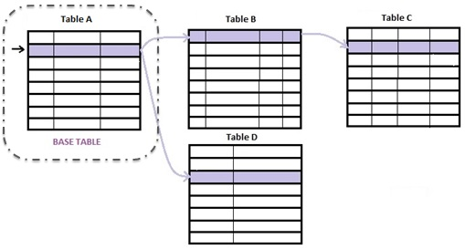
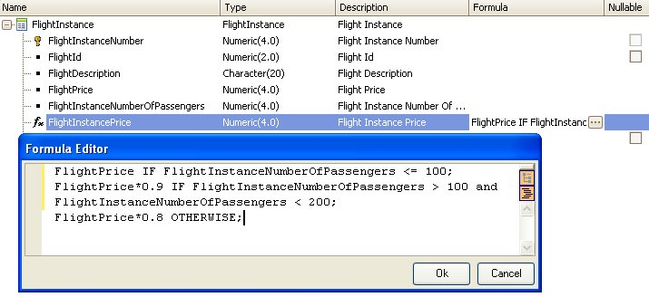

Horizontal Formulas allow defining expressions (either arithmetic or any other kind). What determines a formula is horizontal (as opposite to aggregate) is the fact that attributes involved belong to one extended table.  For example: "FlightInstancePrice = FlightPrice * 0.9" being FlightInstancePrice an attribute virtually in FLIGHTINSTANCE table (table A in diagram) and FlightPrice in FLIGHT table (table B in diagram) where for each flight instance there is one and only one associated Flight (that is: FLIGHT belongs to the FLIGHTINSTANCE extended table). Horizontal formulas can be either global (assigned to attributes at transaction structure level, indicating those attributes always assume the result of a calculation) or local (or inline, assigned to attributes, variables, elements of Data Providers, SDTs, etc., or being part of conditions that are evaluated in runtime). That is: Horizontal Global Formula: <attribute> = <horizontalConditionalFormula> The main difference between global and inline, is while an inline horizontal formula is simply an expression, global horizontal formula may consist of several conditional expressions. In addition, as in any inline formula, variables could be involved in the expression (because the formula does only exists in this local piece of code, where the variable is known. Whereas you really don't know all the places where a global formula is going to be triggered. This is the meaning of "global". It can be used everywhere an attribute of the corresponding base table is allowed) Saying "horizontal inline formula" is the same as saying: expression. Wherever you can write an expression, you are particularly writing an horizontal formula. That's why the concept of "inline horizontal formula" is not very productive. Not so for "global horizontal formula", that let's say that an attribute will always be calculated in this way. Meanwhile, an Aggregate formula does not need a context to be evaluated, a horizontal does. It will be understood below by means of two examples. Syntax<horizontalConditionalFormula>::= <exp>1 [ if <cond>1 ] [ ;<exp>2 [ if <cond>2 ]] [ ;<exp>n [otherwise | if <cond>n ]] <horizontalUnconditionalFormula>::= <exp> Where: <exp>n may be any valid expression. It can include the following:
<cond>n may be any valid triggering condition. It can include the following:
The result returned by a horizontal formula will be the expression related to the first condition returning True. The others will not be evaluated. <otherwise>: when none of the evaluated triggering conditions return True, if there is an Otherwise clause in the formula definition, the returned result will be the expression associated with this clause. Consideration when used in Smart DevicesThe client-side Events grammar in Smart Devices is limited regarding the events executed on the server. That's why allowed inline expressions not only are horizontal (aggregate are not allowed), but also are a reduced set of what you have seen above.
Example: global formula
Flight
{
FlightId*
FlightDescription
FlightPrice
}
FlightInstance
{
FlightInstanceNumber*
FlightId
FlightDescription
FlightPrice
FlightInstanceNumberOfPassengers
FlightInstancePrice = FlightPrice if FlightInstanceNumberOfPassengers <= 100;
FlightPrice * 0.9 if FlightInstanceNumberOfPassengers > 100 and FlightInstanceNumberOfPassengers < 200;
FlightPrice * 0.8 otherwise;
FlightInstanceTotal = FlightInstanceNumberOfPassengers * FlightInstancePrice;
}
The FlightInstancePrice and FlightInstanceTotal attributes are both horizontal formulas (in the above example the associated calculations are shown). They are all global formulas. Look at FlightInstancePrice definition. Its associated table is FLIGHTINSTANCE (the table the attribute would be if it were physically stored). The formula attributes belong to the FLIGHTINSTANCE extended table (that is to say, FLIGHTINSTANCE and FLIGHT tables). Note it is defined as three conditional expressions. In the example below, the same definition but inline will be explained. FlightInstanceTotal also has FLIGHTINSTANCE as its base table (involve attributes that belong to the FLIGHTINSTANCE extended table), but the definition is unconditional. In both cases, the formulas have a context: the FlightInstance first level transaction. They are not defined in isolation. The following image shows the "FlightInstance" transaction being edited with the GeneXus transaction editor, and the FlightInstancePrice horizontal formula attribute being edited with the GeneXus formula editor:  Example: local/inline formulaIf you did not have the flight instance price calculated as a formula attribute, and you need it inside a procedure code, you would write:
Do case
case FlightInstanceNumberOfPassengers <= 100
&price = FlightPrice
case FlightInstanceNumberOfPassengers > 100 and FlightInstanceNumberOfPassengers < 200
&price = FlightPrice*0.9
otherwise
&price = FlightPrice*0.8
endcase
Strictly speaking, here you have three expressions, that is, three inline formulas. Observe this code only makes sense in a context where you are positioned in the FlightInstance table. Thus, this code block must be within that appropriate context. You would still have an inline formula when assigning it to an attribute outside the attribute definition level. That is: if you have in a procedure source:
For each order FlightInstanceNumber
Do case
case FlightInstanceNumberOfPassengers <= 100
FlightInstancePrice = FlightPrice
case FlightInstanceNumberOfPassengers > 100 and FlightInstanceNumberOfPassengers < 200
FlightInstancePrice = FlightPrice*0.9
otherwise
FlightInstancePrice = FlightPrice*0.8
endcase
endfor
Here you are locally assigning the result of the formula evaluation to the attribute FlightInstancePrice, which is not itself a formula, but a normal attribute (like any other). Only here, inside this code, it is calculated in such a way. Contextual tableYou have seen that for the formula to be meaningful, it must be in a context where you are positioned on a table that reaches all the formula attributes by means of its extended. That is why the presence of the same formula will affect this contextual table determination as well. For example, having a for each as context: for each order FlighPrice &total = &total + FlightInstanceNumberOfPassengers * FlightInstancePrice endfor The for each base table is not FLIGHT but FLIGHTINSTANCE, because of the attributes of the expression (formula). |